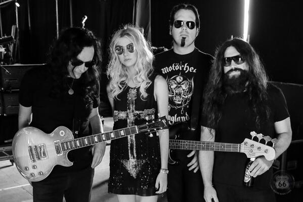

Група Einherjer сформована в січні 1993 зусиллями Frode Glesnes (Guitar) і Gerhard Storesund (Drums) в їх рідному місті Haugesund, Norway. Мета і сенс цієї затії полягали в найбільш щирі і точні передачі почуттів і атмосфери норвезької міфології засобами важкої музики. Таким чином Einherjer визначають свою творчість як Viking Metal.
Вперше Einherjer опинилися в студії в грудні 1993, щоб записати демо Aurora Borealis. Склад тоді був такий: Frode (guitar), Gerhard (drums), Rune Bjelland (vocals) і Audun Wold (bass). Демо було добре прийнято в андеграунді і їм вдалося укласти контракт на випуск семідюймовку з Necromantic Gallery Prod. / Damnation Dist. Einherjer опинилися в студії вдруге в травні 1994 для запису синглу Leve Vikingaanden. (Recorded at Lydloftet Шlen / Norway October 1994. Видано обмеженим тиражем і є раритетом). Як і демо, цю семидюймовим роботу прийняли в андеграунді "на ура". Necropolis Records задумалися і запропонували співпрацю. Вони захотіли випустити Aurora Borealis як mini-cd. (Recorded at Lydloftet Шlen / Norway December 1993. "Aurora Borealis" was originally released as a demo in 1994). Група прийняла пропозицію і через півтора року платівка вийшла. Цей блискучий міньйон поєднував True Norwegian black metal з сильними впливами Viking Metal і folk. Чарівна і епічна музика, одночасно і екстремальна і фолкова, адресована широкому колу слухачів. Порівняти її можна з роботами Enslaved, Storm, і In the Woods!
З приходом 1996 з'явилося багато проблем. Музиканти стали змінюватися в групі занадто часто. Незважаючи на це новий контракт був підписаний з Napalm Records на випуск двох альбомів. З Audun як другим гітаристом і новим басистом Stein Sund, склад Einherjer був сильним, як ніколи. "Dragons Of The North" був записаний влітку 1996 і отримав неймовірно гарні відгуки повсюдно. (Recorded at Grieghallen Studio Bergen / Norway May / June 1996). Dragons of the North (Napalm) CD Атмосферна комбінація старого Viking metal в дусі Bathory (Hammerheart) в комбінації з epic power і true heavy metal. Це і є ЧИСТИЙ VIKING METAL. Napalm Records випускають перший альбом Einherjer на піку популярності їх "Aurora Borealis" MCD. Учасники групи стверджують, що грають "Чистий Viking Metal, оснований на heavy metal, thrash і black metal (вокал нагадує блекові)", але також і заявляють, що вони не black metal група! "Dragons of the North" це динамічний і прогресивний норвезький metal з блекові і чистим вокалами. Mini-cd Far Far North був записаний в січні 1997 (Recorded at Grieghallen Studio Bergen / Norway January / March 1997). Це мав бути сингл що випереджає вихід великої альбому на Napalm. Але Napalm Records не змогли виконати всіх умов домовленості і група почала шукати інший контракт. Коли прийшла пропозиція від Century Media Records, вони не вагалися. "Far Far North" так і не вийшов на Napalm, так що першим релізом на Century Media став саме "Far Far North" у вигляді mini-cd і Picture Disc LP. Far Far North EP 1997 Випущений як Digipak EP, містить одну нову композицію і дві рідкісних старих композиції; всі записані в Grieghallen Studios, Norway. Передує вихід нового альбому "Oden Owns Ye All". Також випущений як 12-inch Picture-Disc для колекціонерів! 3 пісні героїчного Viking / Nordic Metal: "Far Far North", "Naar Hammeren Heves", і "Naar Aftensolen Rinner" (Понад 20 хвилин тривалості)!
Незважаючи на те, що з лейблами проблеми траплялися, вони з'явилися всередині групи. Розбіжності в складі призвели до того, що Einherjer став складом з двох чоловік. Audun, Rune і Stein вирішили піти. "Far Far North" став їх останнім записом з Einherjer.
Незважаючи ні на що, Frode і Gerhard відмовилися здаватися так легко і надалі, мабуть, не здадуться! Був знайдений новий вокаліст Ragnar Viske. Як можна почути на наступному альбомі, Ragnar багато в чому змінив вигляд Einherjer. Грунтуючись на чистому вокалі він приніс нові виміри в саунд групи. Іншим новим людиною в складі став басист Erik Elden. Дуже досвідчений, енергійний, він вніс величезну лепту в звучання нового альбому. Називається ж нова робота вікінгів "Odin Owns Ye All".
Тепер використано ще більше тим з міфології для пісень. У них відображені всі найважливіші події і персонажі норвезької міфології. По частині музики альбом ще важче попередників. Їх Viking metal грунтується на гітарному саунде нагадує роботу Old Man's Child "The Pagan Prosperity", однак широкий простір і для партій клавішних. Таким чином, "Odin Owns Ye All" друга робота Einherjer на Century Media. Альбом з'явився на полицях магазинів у Європі вже в травні 1998. У травні ж Einherjer залишають батьківщину, щоб надерти Європі дупу в своєму першому турі, разом з іменитими британцями Cradle of Filth.
Збіглий Erik Elden був замінений на сесійного басиста Tchort'ом (Satyricon / Emperor). 25 вересня 98 виступ в Kristiansand / Barock, Norway. 1999 став роком репетицій і створення нового матеріалу. За словами Фроде аранжування кілька разів перероблялися і було записано кілька пробних касет. Новий гітарист, Aksel Herloe, приєднався в січні 1999. Einherjer відіграли на Quart festival в липні, після якого з ними розпрощався Tchort. Колишній басист Einherjer Stein Sund, був задіяний в якості сесійного музиканта і в такому складі група вирушила в Gothenburg / Sweden писати новий альбом.
Знову в Los Angered Recordings і знову з продюсером Andy LaRocque, відомий як гітарист King Diamond. У ході запису використовувався жіночий вокал. Einherjer і Century Media вирішили припинити свою співпрацю (Фроде скаржиться, що лейбл звертав на них занадто мало уваги) і хлопці підписалися на норвезький лейбл Native North Records, який самі ж і створили. У січні 00 виступ в Haugesund / Flytten, Norway. У липні 00 в Gransee на Under The Black Sun Open Air, Germany. У першій половині 2000 стало відомо про створення групи ANGELGRINDER (black / death metal) з музикантів EINHERJER і підписанні її на Native North Records. Незабаром очікується альбом цього складу "The Grinding of Angels". Влітку 2000 доходять чутки, що EINHERJER планують видати новий EP. Там буде принаймні одна нова пісня у якої поки навіть назви немає, "When the world lights dim", спочатку записана для Norwegian Native Art і дві килим версії пісень груп, які надихали творчість EINHERJER з 1993. Одна з них ROOT - Casilds Song, інша невідома. Планують випустити альбом в листопаді-грудні. Запланований тур з HELHEIM зірвався через раздолбайства окремих його організаторів.
PS У 2003 році вийшов останній альбом групи Einherjer. Партію вокалу на диску Blot виконав Фроде Глеснес. Альбом вийшов дуже насиченим, хоча не самим мелодійним у групи, з сухуватим важким звучанням, але як і раніше багатими на міфологічні сюжети текстами. Після виходу альбому учасники групи заявили, що досягли всього, чого хотіли досягти під назвою Einherjer. У 2005 вийшло перевидання альбому Norwegian Native Art. Зараз учасники групи задіяні в новому треш-альтернативному проекті Battered.
Знову возз'єдналася група у вересні 2008 року, а через 8 років після виходу останнього альбому Einherjer повертаються з новою платівкою "Norrøn". Вона вийшло 9 вересня 2011 року на Indie Recordings. Диск записаний в Studio Borealis.
Учасники
Frode Glesnes - guitars / vocals
Aksel Herlшe - guitars
Gerhard Storesund - drums
Former members:
Rune Bjelland - vocals
Ragnar Vikse - vocals
Audun Wold - bass
Stein Sund - bass
Erik Elden - bass
Дискографія
Aurora Borealis - demo 1993 [Br ] Leve Vikingaanden - 7 " 1995 (Necromantic Gallery Prod. / Damnation Dist.) 2 tracks
Aurora Borealis - mini-CD (Warmageddon / Necropolis Records) 1996 24:07 4 tracks
Dragons of the North - CD 1996 (Napalm) 48:06 8 tracks
Far Far North EP - mini-CD, picture disc 1997 (Century Media) 3 tracks 20:20
Odin Owns Ye All - CD, picture disc 1998 (Century Media) 9 tracks 45:37 [Br ] Norweigan Native Art - CD 2000 (Native Art)
Blot - CD 2003 (Tabu)
Norrøn - CD 2011 (Indie Recordings)
Dragons Of The North- CD 2016 (Indie Recordings)